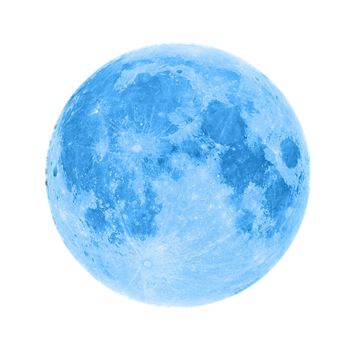
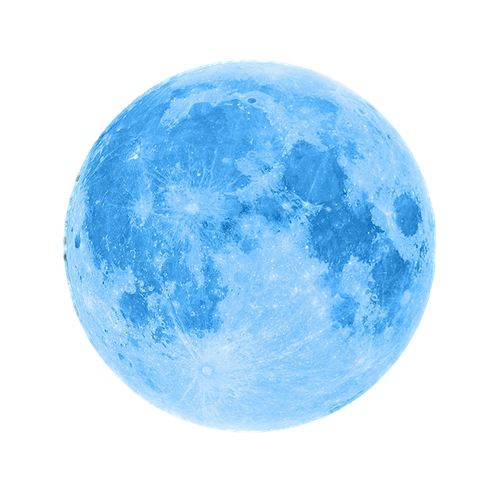

Parallex Effect

The term “parallax” refers to the apparent movement of objects when viewed from different positions. The everyday example of this is seen driving on the highway-- when you look out the window, electrical poles near the road seem to zoom past, while trees in the distance appear to slowly drift by.
Using the parallax effect for display advertising involves multiple layers of images that are placed in the background, which moves slower as compared to the foreground as the user scrolls, creating a 3D animation effect for your ad.
Parallax scrolling is a web design technique in which the website background moves at a slower pace than the foreground. This results in a 3D effect as visitors scroll down the site, adding a sense of depth and creating a more immersive browsing experience.
Parallax is based on optical illusion. Since the human eye perceives objects that are close to us as larger than things farther away, we perceive distant objects as if they were moving more slowly.
The illusion has been long adopted into parallax across different mediums, fostering a realistic effect. Its first use was in traditional animation, dating back to as early as Disney’s Snow White and the Seven Dwarfs, and in video games such as Super Mario.